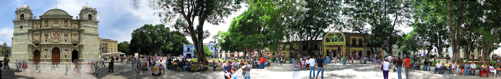

If you’re looking for a city that’s not overwhelmingly big, yet packs a huge punch in terms of activities
and culture, then Oaxaca is the destination for you. This is one of the best places to visit in Mexico.
Oaxaca is Mexico's preserved indigenous and colonial historic city that has spiked toursim since 2017.
Oaxaca has enjoyable weather thats allows for open-air markets, amazing street food, and local artisenal
vendors surrounded by beautiful sun-faded cobblestone streets and the breath-taking Church of Santo
Domingo de Guzmán. Not to mention, there is incredible mezcal-festivals and mezcalerías.
(it’s pronounced wa-ha-ka, by the way)
On a short visit to Oaxaca City, you can bounce around the churches and museums, take day trips out to
ancient ruins, indulge in the local cuisine, and maybe take part in a traditional festival.
hey

This website is based on my trip to Oaxaca a couple of years ago. I went to Oaxaca with a friend who is
originally from there and I had the most wonderful time there. I created this with hopes to inspire
others to visit Oaxaca and experience their culture.
The best time to travel to Oaxaca is the last 2 weeks of July or starting from the 21st, where you can
visit a Guelaguetza Dance Show or a Mezcal Festival to sample Mezcal. Mezcal is a distilled alcoholic
drink that must be made from the agave plant, a slow-growing succulent native to Mexico. It is commonly
referred to as "maguey" in Oaxaca, where the majority of mezcal is produced.
Oaxaca is a unique city filled with tons of history, beautiful culture, incredible food, delicious
mezcal, amazing weather, and even exciting Ancient Archaeology. Start planning your trip now! Oaxaca has
so much to offer and will leave you mesmorized.